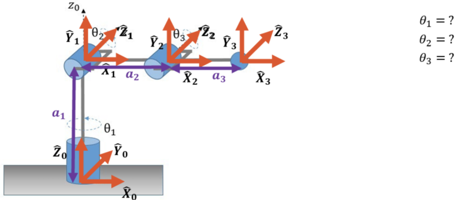
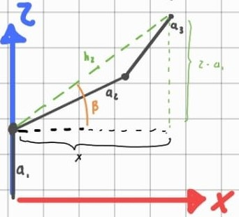
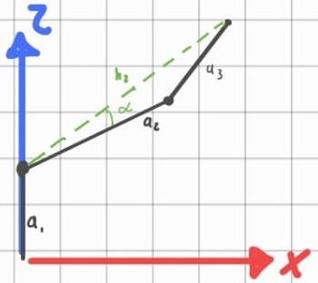
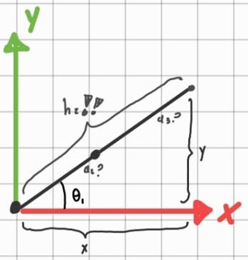

IK and jacobian

1. Overview
This section presents the inverse kinematic analysis of the manipulator and the derivation of the Jacobian from the end-effector position equations.
First, the geometric relationships used to obtain the inverse kinematics equations are introduced. Then, the homogeneous transformations are developed to obtain the complete forward kinematic model \(T_0^3\). Finally, the position vector of the end-effector is extracted and differentiated with respect to the joint variables in order to construct the linear Jacobian.
2. Inverse Kinematics Equations, Lateral view (xz plane)
For this analysis, the initial pose of the robot was adjusted to facilitate the determination of the corresponding joint angles. In this view, the inverse kinematic formulation is centered on \(q_2\) and \(q_3\), as these joint variables govern the geometric configuration of the manipulator in the \(x\)-\(z\) plane.

The joint angle equations are obtained as functions of the target coordinates \((x, z)\).
2.1 \(\theta_2\) and \(\theta_3\) definition
Therefore, the variables \(\alpha\), \(\beta\), and \(\phi\), previously defined, must be known in advance in order to determine the inverse kinematics of \(\theta_2\) and \(\theta_3\).
2.2 Calculation of the intermediate variable \(h_z\)

The variable \(h_z\) must be obtained first because it defines the side of the triangle formed in the \(x\)-\(z\) plane by the links \(a_2\), \(a_3\), and the target position. It is required to apply the law of cosines and compute the auxiliary angles \(\alpha\) and \(\phi\), which are then used to determine \(\theta_2\) and \(\theta_3\).
From the geometric analysis of the manipulator, the following relationship for \(h_z\) is obtained:
Thus, the magnitude of \(h_z\) is:
2.3 Calculation of the Angle \(\beta\)

From the manipulator geometry, the angle \(\beta\) is determined using the inverse tangent function:
2.4 Law of Cosines for \(\phi\)

To determine the internal angle \(\phi\) of the triangle formed by the robot links, the law of cosines is applied:
Solving for \(\phi\), the following expression is obtained:
2.5 Calculation of the Angle \(\alpha\)

Applying the law of cosines again to the robot arm triangle, the following relationship for side \(a_3\) is obtained:
The angle \(\alpha\) is then computed as:
3. Inverse Kinematics Equations, Top view (xy plane)
For this analysis, the initial pose of the robot was adjusted to facilitate the determination of the corresponding joint angles. In this view, the inverse kinematic formulation is centered on \(q_1\), as these joint variables govern the geometric configuration of the manipulator in the \(x\)-\(y\) plane.

From the geometric relationship between the Cartesian coordinates \((x,y)\) and the projected radial distance, \(\theta_1\) is obtained as
Joint Angle Equations
For the angle \(\theta_1\):
For the angle \(\theta_2\):
For the angle \(\theta_3\):
4. Determination of the Robot Jacobian
4.1 Notes
To simplify the trigonometric expressions used in the matrices and in the Jacobian, the following notation is adopted:
4.2 Homogeneous Matrix Multiplication (End effector)
The product corresponding to the homogeneous transformation matrices of the first two links is:
The resulting matrix from the product \(T_0^1 \cdot T_1^2\) is:
The intermediate matrix \(T_0^2\) is multiplied by the transformation matrix \(T_2^3\):
The resulting matrix, which represents the position and orientation of the end-effector with respect to the base frame, is:
From the last column of matrix \(T_0^3\), the position vector of the end-effector is obtained as:
Jacobian Matrix
Differentiating the position vector with respect to the joint variables \(q_1\), \(q_2\), and \(q_3\), the linear Jacobian \(J_v\) is obtained:
Each column of this matrix represents the contribution of one joint variable to the variation of the end-effector position.